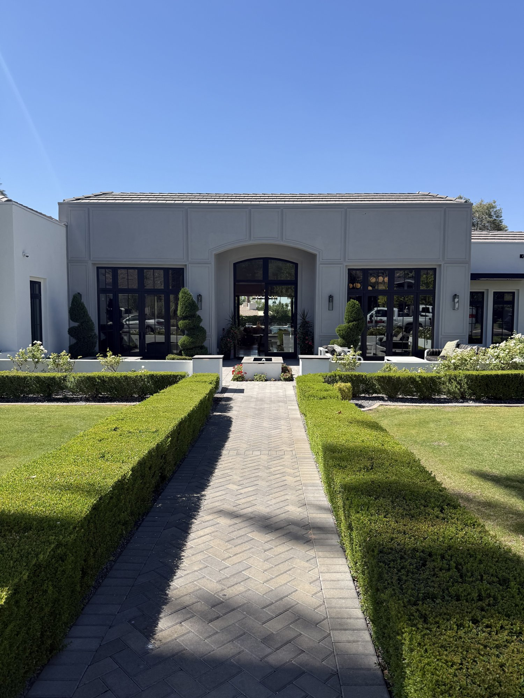

Arcadia vs. Central Scottsdale: Comparing Two Walkable Valley Neighborhoods
 By Kyara Eyre · Published July 27, 2026 · Williams Luxury Homes
By Kyara Eyre · Published July 27, 2026 · Williams Luxury Homes

Arcadia and Central Scottsdale sit right next to each other on the map, and both are known for walkable dining and a mix of housing types. But the two neighborhoods differ in price range, housing stock, and lot character in ways that matter to anyone comparing them directly rather than treating "Scottsdale-area" as one uniform market.
Both are frequently cross-shopped by buyers looking at the greater Old Town corridor, since a search radius drawn around either neighborhood usually pulls in the other. This guide walks through price, housing stock, dining, geography, and lot type side by side, using the same facts covered in each neighborhood's full area guide.
How do home prices compare between Arcadia and Central Scottsdale?
Arcadia homes generally run from about $529,000 for condos and townhomes to $5 million or more for new-build luxury estates, while Central Scottsdale homes generally run from about $500,000 to $4 million or more. Both areas have a condo and townhome entry point, but Arcadia's ceiling reaches higher, reflecting new-build luxury construction on citrus-grove lots in pockets like Arcadia Proper, a housing type Central Scottsdale offers on a smaller scale.
At the top of the market, Central Scottsdale's ceiling extends slightly higher, driven by large estates in gated communities like Gainey Ranch. Arcadia's high end is instead driven by new-build luxury construction on citrus-grove lots, where the value sits as much in the lot as the structure. That supply is also fixed: Arcadia's boundaries don't expand, so no new citrus-grove lots are ever created, which adds to the scarcity that supports those prices.
Because both ranges are wide, a specific address in either neighborhood needs its own comparable-sales review rather than a neighborhood-wide average. A renovated ranch home in Arcadia and a golf-course estate in McCormick Ranch can carry similar price tags despite very different architecture and lot type, so the range alone doesn't tell the full story.
How does the housing stock differ between ranch homes and resort-style communities?
Arcadia's housing stock centers on original mid-century ranch homes, many since renovated, alongside new-build luxury construction on the same citrus-grove lots. Central Scottsdale's housing stock is more varied by design, spanning Old Town condos and lofts, the lake-and-golf-course community of McCormick Ranch, and the resort-style, gated Gainey Ranch.
Put simply, Arcadia's inventory is built around one recurring lot type, the citrus-grove parcel, reused for two very different housing products: an original ranch home or a new-build replacement. Central Scottsdale's inventory is built around several distinct subdivisions, each with its own architectural identity, from Old Town's dense residential core to Gainey Ranch's landscaped, gated grounds.
That difference shows up in how each market is typically searched. Arcadia listings are usually filtered by condition (original versus renovated versus new-build) while Central Scottsdale listings are more often filtered by subdivision first, since McCormick Ranch, Gainey Ranch, and Old Town read as three separate housing products under one neighborhood name.
What subdivisions define each neighborhood?
Arcadia's notable subdivisions are Arcadia Camelback, Arcadia Lite, Silverado, and the Villa Monterey area, each an informal geographic pocket rather than a single governing association. Central Scottsdale's notable subdivisions are McCormick Ranch, Gainey Ranch, Old Town Scottsdale, and the Cactus Corridor, several of which carry their own HOA structure.
Arcadia Camelback sits closest to Camelback Mountain and skews toward larger lots, while Arcadia Lite tends toward smaller, more original ranch homes. In Central Scottsdale, Gainey Ranch is the most resort-style and gated of the group, while the Cactus Corridor stands apart for its equestrian-zoned parcels.
How does the dining and walkability scene compare?
Both neighborhoods support a walkable dining scene, but the character of each is different. Arcadia's commercial corridors are lower-density and residential-adjacent, anchored by Postino, Chelsea's Kitchen, Beckett's Table, and théa, the rooftop restaurant at The Global Ambassador near the Old Town Scottsdale border.
Central Scottsdale's walkable core is centered on Old Town itself, a denser entertainment and gallery district that includes The Montauk, Toca Madera, Pinyon, Uchi, and Moxies, along with a long-running art walk tradition through the Main Street and Marshall Way galleries. Arcadia's dining scene reads as neighborhood-scale; Central Scottsdale's reads as a downtown core.
The two scenes also connect physically. The Arizona Canal path runs along Arcadia's edge and links toward Central Scottsdale's Old Town core, so a walk or bike ride can string together both dining districts for anyone staying in either neighborhood.
How close are Arcadia and Central Scottsdale to each other?
Arcadia sits directly against Old Town Scottsdale's border, so the two neighborhoods are only minutes apart by car and, along that shared edge, within walking distance of one another. Camelback Mountain rises along Arcadia's northern edge, while Old Town Scottsdale and Scottsdale Fashion Square anchor Central Scottsdale a short distance to the east.
The Arizona Canal path also runs through Arcadia, offering a walking and cycling connection toward Central Scottsdale for anyone moving between the two areas without a car. Because of this proximity, comparing the two is often really a comparison of which side of one shared border best fits a buyer's priorities on price and lot type.
Central Scottsdale's own location near the geographic middle of the Valley adds a further layer, offering shorter drive times to Phoenix, Tempe, and Scottsdale's northern communities than either neighborhood's more outlying alternatives.
Which has more equestrian or larger-lot options?
Central Scottsdale has more equestrian-zoned lots, concentrated in the Cactus Corridor along Cactus Road, where pockets of larger residential parcels carry horse-property zoning. Arcadia is not known for equestrian zoning at all.
Arcadia's larger-lot options instead come from its citrus-grove parcels, particularly in the Arcadia Camelback pocket, where mature citrus coverage and mountain proximity support bigger footprints than the neighborhood's smaller original ranch lots. So while both neighborhoods offer larger-lot inventory, the lot type differs: equestrian acreage in Central Scottsdale's Cactus Corridor versus citrus-grove parcels in Arcadia.
Buyers prioritizing lot size over lot type should compare both directly: a Cactus Corridor parcel and an Arcadia Camelback parcel can land in a similar acreage range while offering very different landscaping, zoning, and use.
For the full community profile on either neighborhood, see the Arcadia area guide and the Central Scottsdale area guide.
Frequently asked questions
What is the price range for homes in Arcadia compared to Central Scottsdale?
Arcadia homes generally range from about $529,000 for condos and townhomes to $5 million or more for new-build luxury estates, while Central Scottsdale homes generally range from about $500,000 to $4 million or more. Arcadia's ceiling reaches higher, reflecting new-build luxury construction on citrus-grove lots, while Central Scottsdale's entry point stays comparable thanks to its own condos and townhomes near Old Town.
Is Arcadia part of Scottsdale or Phoenix?
Arcadia is a Phoenix neighborhood that borders Old Town Scottsdale, while Central Scottsdale is within Scottsdale city limits itself. The two sit directly adjacent to one another, separated only by the municipal boundary.
What subdivisions are in Central Scottsdale versus Arcadia?
Central Scottsdale includes McCormick Ranch, Gainey Ranch, Old Town Scottsdale, and the Cactus Corridor. Arcadia includes Arcadia Camelback, Arcadia Lite, Silverado, and the Villa Monterey area.
Which neighborhood has more equestrian-zoned lots?
Central Scottsdale's Cactus Corridor includes pockets of larger residential lots with equestrian zoning. Arcadia is not known for equestrian zoning, though its Arcadia Camelback pocket includes larger citrus-grove lots.
What restaurants are near Arcadia versus Central Scottsdale?
Arcadia's dining scene includes Postino, Chelsea's Kitchen, Beckett's Table, and théa at The Global Ambassador. Central Scottsdale's dining scene includes The Montauk, Toca Madera, Pinyon, Uchi, and Moxies.
How far apart are Arcadia and Central Scottsdale?
Arcadia sits directly against the Old Town Scottsdale border, so the two neighborhoods are only minutes apart by car and, in some pockets, within walking distance of one another.
Weighing Arcadia against Central Scottsdale?
Reach out to Kyara Eyre at 708-714-2896 or kyara@williamsluxuryhomes.com for current comparables and guidance on either neighborhood.